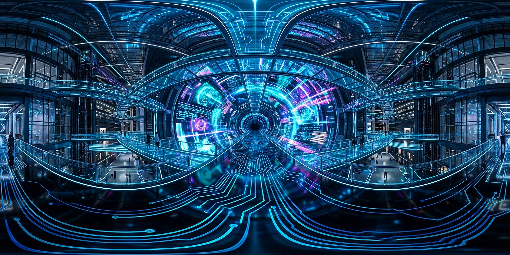
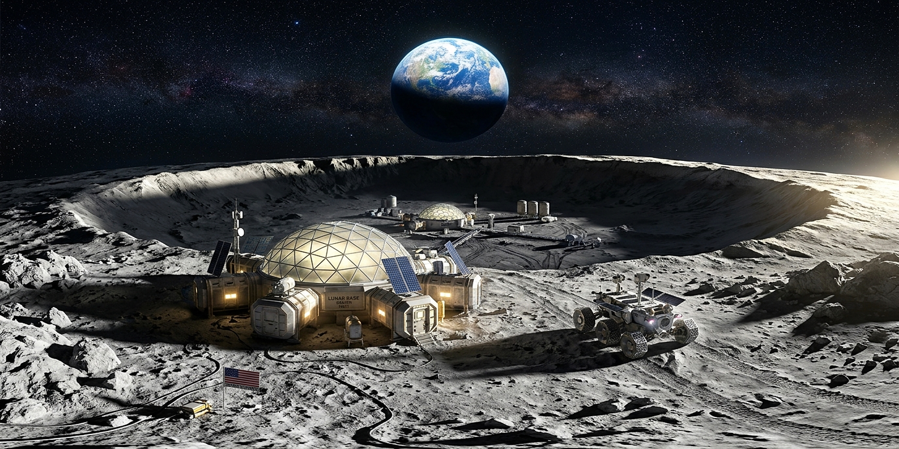
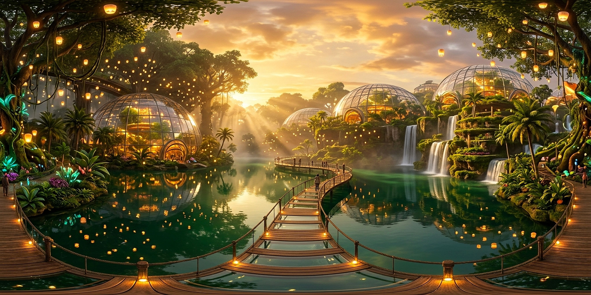

Hiro AR Target
Point your camera at this target to anchor the 3D portal in space, or switch to Sim Mode for instant preview.

Point your camera at this target to anchor the 3D portal in space, or switch to Sim Mode for instant preview.


